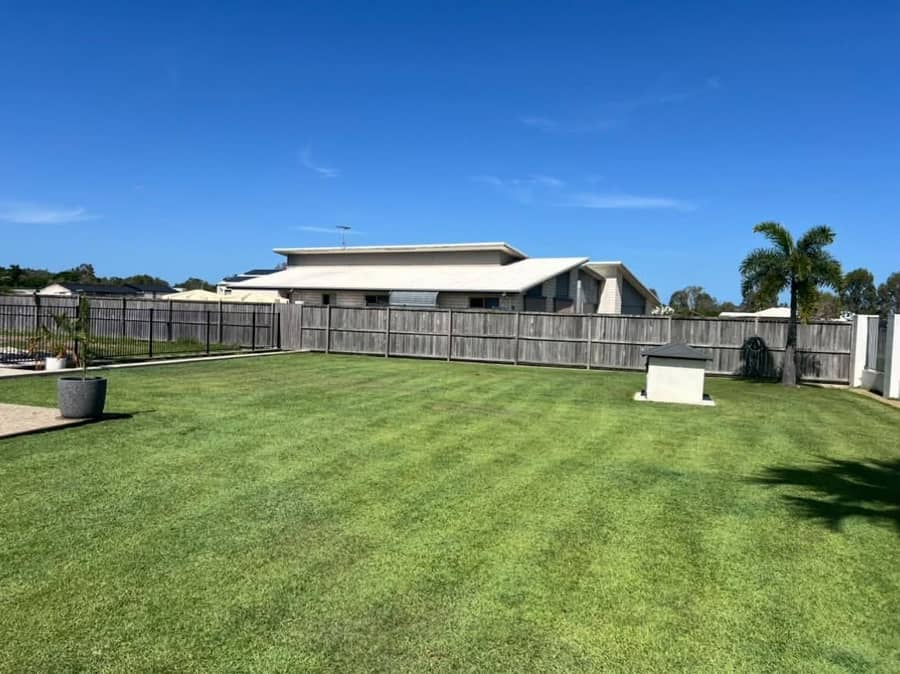

01
Lawn mowing & edging
Regular mows on a schedule that suits you, or a one-off cut when it has got ahead of you. Edges run out along the paths and driveway, and the hard surfaces blown down before they leave.
- Push and ride-on mowing to suit the block
- Edges cut along paths, drives and beds
- Clippings managed and paths blown down
- Weekly, fortnightly or one-off